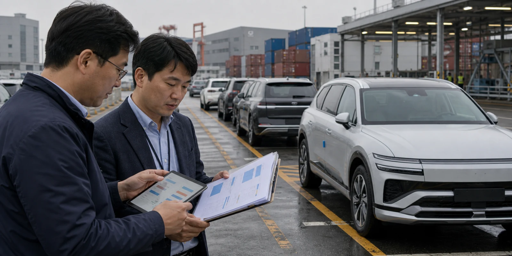

현대차은 글로벌 완성차 대형주로 분류되지만, 지금 시장이 묻는 질문은 이름값 하나로 끝나지 않습니다. 현대차 주식은 전기차 성장 둔화, 미국 관세 부담, 하이브리드 판매, 배당과 자사주 정책이 함께 주가를 움직이는 국면입니다. 거래대금이 몰릴 때는 가격 반응보다 어떤 정보가 새로 들어왔고 어떤 기대가 이미 반영되어 있었는지를 먼저 나누어야 합니다.
이 주제는 추천보다 검증 기준이 중요하므로 현대차을 읽는 순서를 정리합니다. 이 글은 수익률을 약속하지 않으며, 회사와 네트워크가 실제로 증명해야 할 숫자와 남아 있는 부담을 독자가 직접 점검할 수 있도록 돕는 정보형 분석입니다.
전기차 둔화의 빈칸

핵심은 전기차 판매 속도가 보조금, 충전 인프라, 금리, 중고차 가격에 민감하게 흔들리는 상황입니다. 현대차에 대한 시장의 기대는 이 장면이 단순한 뉴스가 아니라 반복 가능한 매출, 사용량, 비용 절감, 혹은 신뢰 회복으로 이어질 때 더 오래 유지됩니다. 같은 headline이라도 일회성 이벤트인지 구조 변화인지에 따라 주가와 코인 가격의 의미가 달라집니다.
확인은 전기차 재고, 인센티브, 판매 믹스, 배터리 원가입니다. 이 지표들은 한 줄로 끝나는 숫자가 아니라 서로 맞물려 움직입니다. 예를 들어 거래대금이 늘어도 수익성, 현금흐름, 고객 승인, 온체인 사용, 규제 조건 중 어느 하나가 따라오지 않으면 기대는 오래 버티기 어렵습니다.
부담은 판매량이 유지돼도 할인 비용이 커지면 이익률이 흔들릴 수 있다는 점입니다. 그래서 현대차을 다룰 때는 긍정적 발표와 부담 요인을 같은 문단 안에 두어야 합니다. 독자가 필요한 것은 방향을 단정하는 문장이 아니라 다음 실적, 공시, 온체인 데이터, 상품 흐름에서 무엇을 확인해야 하는지입니다.
관세는 어디에 남나
핵심은 미국 관세와 통상 정책 변화가 완성차 가격, 현지 생산, 부품 조달에 남기는 비용입니다. 현대차에 대한 시장의 기대는 이 장면이 단순한 뉴스가 아니라 반복 가능한 매출, 사용량, 비용 절감, 혹은 신뢰 회복으로 이어질 때 더 오래 유지됩니다. 같은 headline이라도 일회성 이벤트인지 구조 변화인지에 따라 주가와 코인 가격의 의미가 달라집니다.
확인은 미국 공장 가동률, 부품 현지화율, 환율, 지역별 이익률입니다. 이 지표들은 한 줄로 끝나는 숫자가 아니라 서로 맞물려 움직입니다. 예를 들어 거래대금이 늘어도 수익성, 현금흐름, 고객 승인, 온체인 사용, 규제 조건 중 어느 하나가 따라오지 않으면 기대는 오래 버티기 어렵습니다.
부담은 관세 부담이 단기 비용으로 끝나지 않고 공급망 재배치 비용으로 번질 수 있다는 점입니다. 그래서 현대차을 다룰 때는 긍정적 발표와 부담 요인을 같은 문단 안에 두어야 합니다. 독자가 필요한 것은 방향을 단정하는 문장이 아니라 다음 실적, 공시, 온체인 데이터, 상품 흐름에서 무엇을 확인해야 하는지입니다.
하이브리드가 버팀목인가
핵심은 전기차 둔화 구간에서 하이브리드와 고수익 차종이 이익률을 방어하는 구조입니다. 현대차에 대한 시장의 기대는 이 장면이 단순한 뉴스가 아니라 반복 가능한 매출, 사용량, 비용 절감, 혹은 신뢰 회복으로 이어질 때 더 오래 유지됩니다. 같은 headline이라도 일회성 이벤트인지 구조 변화인지에 따라 주가와 코인 가격의 의미가 달라집니다.
확인은 하이브리드 판매 비중, 제네시스 판매, ASP, 인센티브율입니다. 이 지표들은 한 줄로 끝나는 숫자가 아니라 서로 맞물려 움직입니다. 예를 들어 거래대금이 늘어도 수익성, 현금흐름, 고객 승인, 온체인 사용, 규제 조건 중 어느 하나가 따라오지 않으면 기대는 오래 버티기 어렵습니다.
부담은 일시적 믹스 개선을 장기 경쟁력으로 과대해석할 수 있다는 점입니다. 그래서 현대차을 다룰 때는 긍정적 발표와 부담 요인을 같은 문단 안에 두어야 합니다. 독자가 필요한 것은 방향을 단정하는 문장이 아니라 다음 실적, 공시, 온체인 데이터, 상품 흐름에서 무엇을 확인해야 하는지입니다.
주주환원은 약속을 시험한다
핵심은 배당과 자사주 정책이 자동차 사이클의 변동성을 낮추는지입니다. 현대차에 대한 시장의 기대는 이 장면이 단순한 뉴스가 아니라 반복 가능한 매출, 사용량, 비용 절감, 혹은 신뢰 회복으로 이어질 때 더 오래 유지됩니다. 같은 headline이라도 일회성 이벤트인지 구조 변화인지에 따라 주가와 코인 가격의 의미가 달라집니다.
확인은 잉여현금흐름, 순현금, 배당성향, 자사주 소각입니다. 이 지표들은 한 줄로 끝나는 숫자가 아니라 서로 맞물려 움직입니다. 예를 들어 거래대금이 늘어도 수익성, 현금흐름, 고객 승인, 온체인 사용, 규제 조건 중 어느 하나가 따라오지 않으면 기대는 오래 버티기 어렵습니다.
부담은 미래차 투자와 주주환원이 같은 현금을 두고 경쟁한다는 점입니다. 그래서 현대차을 다룰 때는 긍정적 발표와 부담 요인을 같은 문단 안에 두어야 합니다. 독자가 필요한 것은 방향을 단정하는 문장이 아니라 다음 실적, 공시, 온체인 데이터, 상품 흐름에서 무엇을 확인해야 하는지입니다.
판매대수보다 질
핵심은 지역과 차종에 따라 같은 한 대의 이익이 크게 달라지는 구조입니다. 현대차에 대한 시장의 기대는 이 장면이 단순한 뉴스가 아니라 반복 가능한 매출, 사용량, 비용 절감, 혹은 신뢰 회복으로 이어질 때 더 오래 유지됩니다. 같은 headline이라도 일회성 이벤트인지 구조 변화인지에 따라 주가와 코인 가격의 의미가 달라집니다.
확인은 북미·유럽 고수익 차종, 인도 성장, 금융 부문 건전성, 재고 회전입니다. 이 지표들은 한 줄로 끝나는 숫자가 아니라 서로 맞물려 움직입니다. 예를 들어 거래대금이 늘어도 수익성, 현금흐름, 고객 승인, 온체인 사용, 규제 조건 중 어느 하나가 따라오지 않으면 기대는 오래 버티기 어렵습니다.
부담은 판매대수 headline이 좋아도 수익성이 약하면 주가 재평가가 제한될 수 있다는 점입니다. 그래서 현대차을 다룰 때는 긍정적 발표와 부담 요인을 같은 문단 안에 두어야 합니다. 독자가 필요한 것은 방향을 단정하는 문장이 아니라 다음 실적, 공시, 온체인 데이터, 상품 흐름에서 무엇을 확인해야 하는지입니다.
다음 확인 순서
이 흐름은 현대차을 다시 볼 때는 거래대금이 왜 몰렸는지, 그 이유가 공식 자료와 실제 숫자로 확인되는지, 그리고 이미 가격에 반영된 기대보다 새로 확인된 증거가 더 큰지 차례로 보아야 합니다. 이 순서가 있어야 단기 화제와 지속 가능한 이슈를 구분할 수 있습니다.
특히 한국주식 분야의 글은 특정 이름을 반복해 소비하는 방식보다, 아직 충분히 다루지 않았지만 거래대금과 뉴스가 함께 커지는 대상을 계속 발굴해야 합니다. 다만 사용자가 특정 종목이나 코인을 지정한 경우에는 그 대상을 중심에 두고, 투자 조언이 아니라 판단 기준과 확인 지표를 제공해야 합니다.
현대차의 다음 움직임은 단일 뉴스보다 여러 확인 신호가 겹칠 때 더 설득력 있게 읽힙니다. 좋은 소식이 나와도 비용과 규제, 경쟁, 유동성의 질을 함께 확인해야 하며, 나쁜 소식이 나와도 불확실성이 해소되는 성격인지 따로 보아야 합니다.